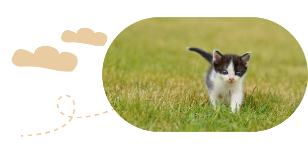
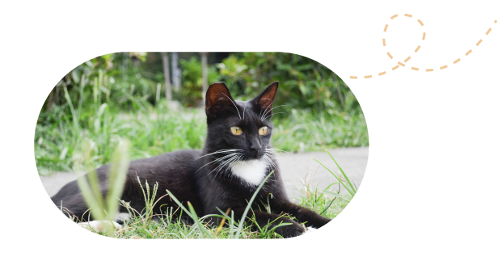
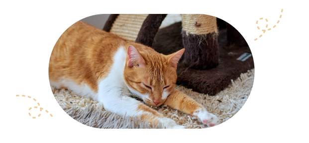
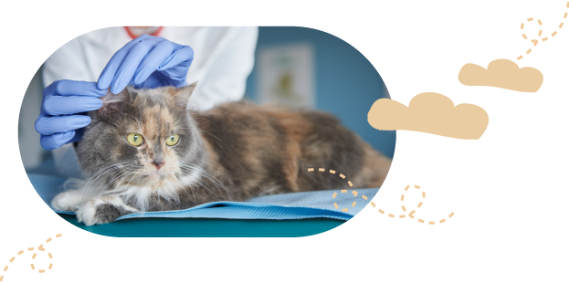

貓咪健康幸福守則
Rules for Cat Health and Happiness
Rule 01
迎接貓咪前準備
恭喜您！
即將迎接一隻可愛貓貓成為新的家人！
在牠們可愛的小爪子踏進家門之前，
請先確認自己是否備妥貓咪所需的物品。
Rule 02
打造一個安全舒適的家
您需要準備三個主要的活動區域，每一個活動區域都需要被隔開，最好分別位於不同的房間。
喝水和吃飯的區域
貓咪需要一個安靜的環境，好讓牠們在吃飯的
時候不會被打擾或受到驚嚇。
睡覺和休息的區域
貓咪需要非常大量的睡眠，請提供一個放鬆、
遠離吵雜動線的環境，讓牠們可以放心休息。

上廁所的區域
上廁所其實是一件會讓牠們感到脆弱的事情。
最好將牠們的便盆分開擺放，並具備隱蔽性。
Rule 03
遠離危險的地方


Rule 04
照顧愛貓的健康
-

幼貓
1.適當飲食：提供高品質食物。
2.社交化訓練：培養友善和信任感。
3.定期獸醫檢查：確保健康狀態。 -

青少年貓
1.適當的飲食：提供青少年貓專用食物。
2.積極的運動和遊戲：促進身體發展和鍛煉。
3.定期獸醫檢查和疫苗接種：預防常見疾病。 -

成貓
1.健康飲食：提供平衡的貓糧。
2.定期獸醫檢查：監測健康狀態。
3.適當運動和遊戲：維持體重和心理健康。 -

熟齡貓
1.適當的飲食：根據年齡和健康調整飲食。
2.定期獸醫檢查和健康監測：關注任何變化。
3.舒適的休息和睡眠環境：提供良好的休息區。